OSPF to IS-IS, SR-MPLS, RR Design, NAT, and SR-TE Groundwork
This lab documents one of the most realistic Service Provider migrations in my CCIE-SP journey: moving the core IGP from OSPF to IS-IS, enabling Segment Routing MPLS, removing LDP after validation, strengthening the RR design, modernizing NAT, and preparing the backbone for SR-TE and PCE.
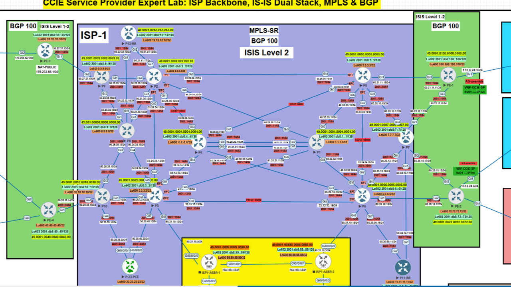
Quick Migration Map
IGP Migration
Move the backbone from OSPF into an SP-style IS-IS design.
OSPF -> IS-IS
SR-MPLS First
Validate SRGB, SRLB, prefix-SIDs, adjacency SIDs, and LFIB behavior.
SR labels carry the core
LDP Exit
Remove LDP only after SR forwarding is clean and end-to-end traffic works.
No LDP after proof
RR Resiliency
Use BFD, add-paths, diverse paths, and cleaner cluster design.
RR is control-plane armor
Lab Scope and Objective
Over the past days, I completed one of the most realistic Service Provider labs of my CCIE-SP journey. The objective was ambitious but practical:
- Migrate the core IGP from OSPF to IS-IS.
- Enable Segment Routing MPLS (SR-MPLS) across the full backbone.
- Remove LDP cleanly once SR forwarding was validated.
- Redesign NAT on PE-3 Boundary using a real ISP-style public IP pool.
- Maintain customer VRF reachability throughout the migration.
- Strengthen the Route Reflector (RR) architecture using BFD, diverse-paths, and backup paths.
- Begin preparing the network for SR-TE, PCE, and Traffic Engineering Databases.
Lab Setup
All of this was running in a setup where:
Backbone
P routers run IS-IS Level-2 only.
P = L2-only
Provider Edge
PE routers run IS-IS Level-1-2.
PE = L1-L2
Route Reflectors
Dual dedicated RRs with BFD fall-over and additional-paths.
RR resiliency
Forwarding
100% SR-MPLS label stack after LDP removal.
No LDP
Customers
Customer services live inside VRF CCIE-SP.
MPLS L3VPN
Internet Edge
Dedicated IOS XR router acting as the INTERNET gateway.
XR edge
Services
MPLS L3VPN today, with future SR-TE capabilities.
L3VPN + SR-TE
Production Mindset
Every migration teaches something new when you work in an ISP.
Lab mirrors reality
Working in an ISP means every migration teaches something new. This lab reinforced many of the decisions I face daily in production.
IGP Migration: OSPF to IS-IS
I began by converting the backbone from OSPF to IS-IS. The design follows a classic SP approach:
P routers: L2-only
PEs: L1-L2
metric-style wide
IPv6 via multi-topology
segment-routing mpls
microloop avoidance segment-routing
conf t
router isis CCIE-SP
mpls ldp autoconfigBefore SR forwarding takes over, LDP must still signal labels. A simple but powerful reminder.
Enabling Segment Routing MPLS
Once IS-IS stabilized, I activated SR-MPLS everywhere. Each router advertised:
SRGB
Global segment space used for prefix-SIDs.
16000-23999
SRLB
Local segment space used for local and adjacency behavior.
15000-15999
Prefix-SID
Stable label tied to loopback reachability.
Loopback -> SID
Adjacency SID
Explicit link-level segment used for traffic engineering paths.
Link -> SID
Validation included:
show isis segment-routing
show isis database verbose
show mpls forwarding-table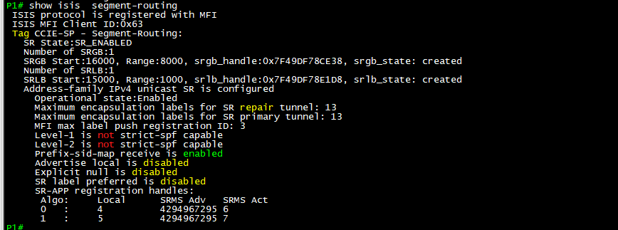
show isis segment-routing confirms SR is registered and the SRGB/SRLB
values are active in the IS-IS process.
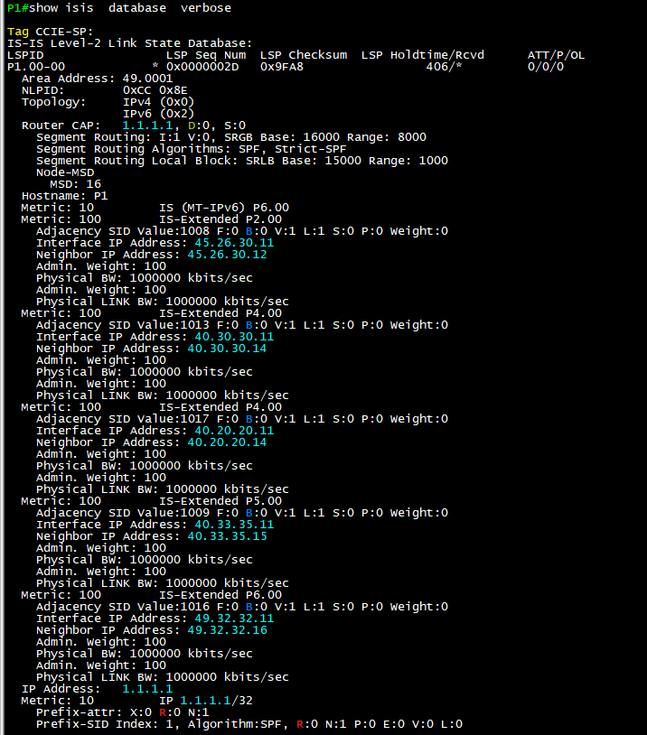
show isis database verbose exposes the SR capabilities, SRGB/SRLB,
adjacency SIDs, and prefix-SID information inside the IS-IS database.
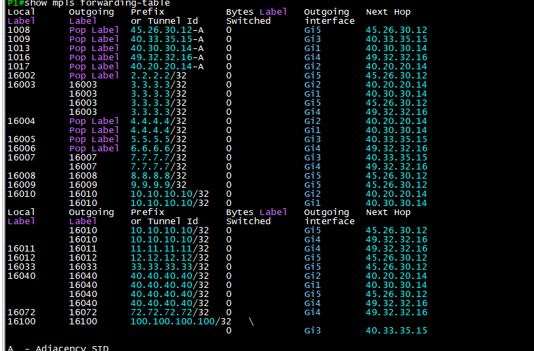
show mpls forwarding-table validates that the label forwarding plane
is populated with SR and adjacency labels before removing LDP.
Decommissioning LDP
With SR forwarding verified, I removed LDP:
no mpls ldp autoconfig
no mpls ldp router-id Loopback600
no mpls ip propagate-ttl forwarded
no mpls ldp label allocate ...Result: a clean LFIB with only SR and adjacency labels.
Modernizing Route Reflector Design
My RRs (RR-Main and RR-Shadow) were upgraded with:
BFD Fall-Over
Faster failure detection for BGP sessions toward clients and peer RRs.
fall-over bfd
Add-Paths
Allows the RR to advertise more path visibility when the design needs it.
additional-paths
Diverse-Path Backup
Backup path advertisement improves control-plane resiliency.
diverse-path
Cluster-ID Redesign
A cleaner RR cluster makes troubleshooting and path behavior easier.
cluster-id cleanup
RR Prefix-SID
RR loopbacks also participate in the SR control plane.
SR for RR loopbacks
This creates real RR resiliency similar to production ISPs.
RR Main
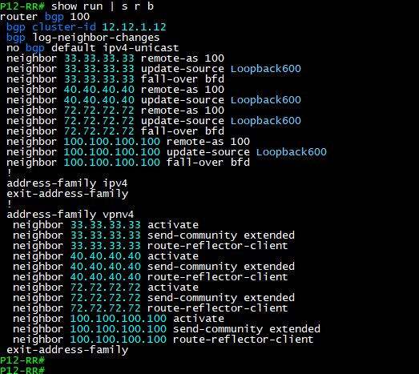
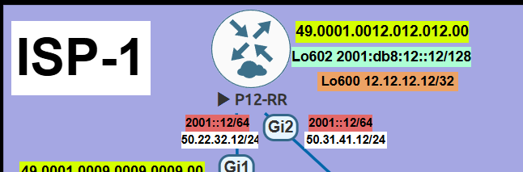
RR Shadow
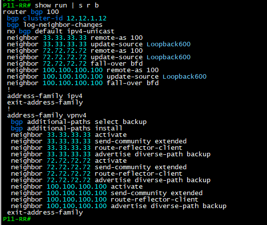
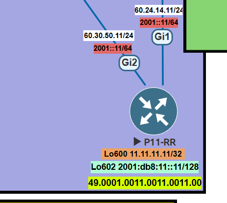
Replacing Legacy NAT with an ISP-Style Public Pool
Originally the PE used a basic GNAT model. I redesigned it to match a real ISP approach:
VRF-Aware NAT
NAT decisions are tied to the customer VRF, not just the global table.
VRF CCIE-SP
Public Pool
The PE uses an ISP-style public range for translation.
Pool -> Internet
Route Resolution
The VRF and global routing tables must agree on return reachability.
VRF -> Global
XR Internet Edge
The Internet router only needs clean static routes back to the customer side.
Return path matters
Final NAT on PE-3
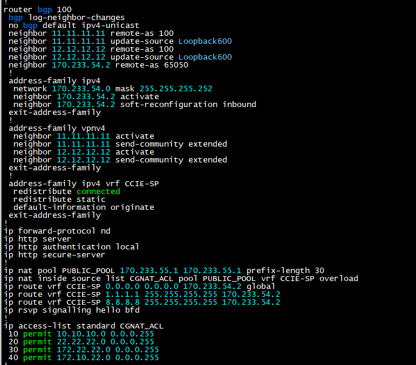
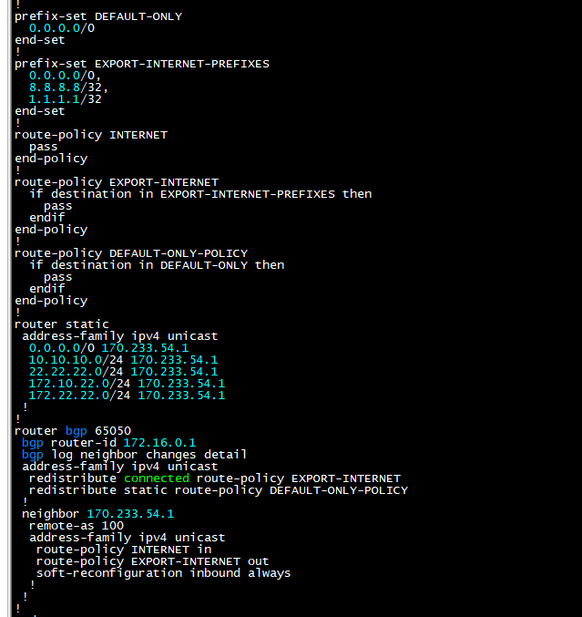
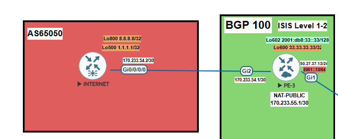
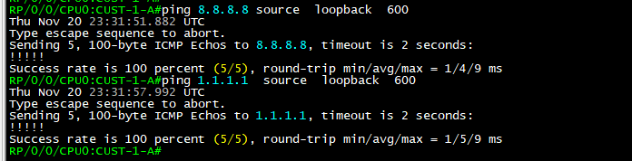
Final result: customer VRF traffic reached the Internet cleanly, and the design looked closer to what I would expect in a production SP environment.
Phase 6: Preparing for SR-TE and PCE
Before this migration, I used MPLS-TE FRR and RSVP-TE for protection. Now that the domain runs SR-MPLS, the next natural step is to move toward SR-TE and PCE. This is where the lab starts becoming a design platform, not just a feature test.
- Deploy SR-TE policies.
- Advertise topology into BGP-LS.
- Activate external PCE and PCC behavior.
- Use Binding SIDs for policy abstraction.
- Use TI-LFA for sub-50ms convergence.
- Replace legacy RSVP-TE FRR with a modern SR-TE architecture.
Key Takeaways
- IGP migrations are multi-stage events, not a single command change.
- SR-MPLS must be validated in the forwarding table before removing LDP.
- VRF reachability can fail from a control-plane dependency that looks small.
- RR design matters because the control plane needs resiliency too.
- VRF-aware NAT is cleaner when the return path is designed intentionally.
- SR-TE and PCE make more sense once the SR foundation is stable.
RFCs Referenced During the Lab
- RFC 3031 - Multiprotocol Label Switching Architecture
- RFC 5305 - IS-IS Extensions for Traffic Engineering
- RFC 5307 - IS-IS Extensions in Support of GMPLS
- RFC 8402 - Segment Routing Architecture
- RFC 8667 - IS-IS Extensions for Segment Routing
- RFC 7911 - Advertisement of Multiple Paths in BGP
- RFC 5880 - Bidirectional Forwarding Detection
- RFC 2328 - OSPF Version 2
The biggest lesson was not just that SR-MPLS works. It was seeing how IGP design, label distribution, RR resiliency, NAT, and future traffic engineering all depend on sequencing. In SP networks, the order of operations is part of the design.
Comments & Discussion
If this lab helped you, or if you have feedback, questions, or another way to approach OSPF to IS-IS migration, SR-MPLS rollout, RR resiliency, or SR-TE preparation, feel free to leave a comment below.